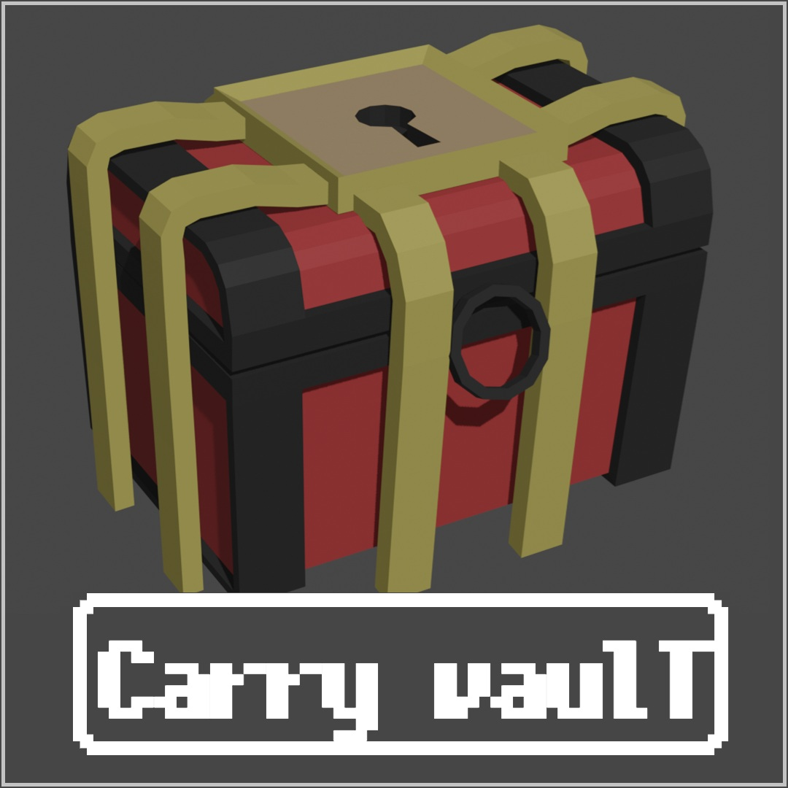
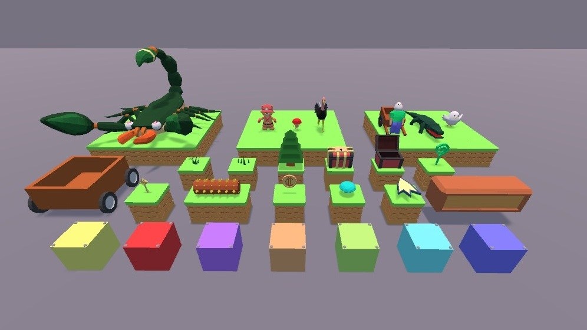
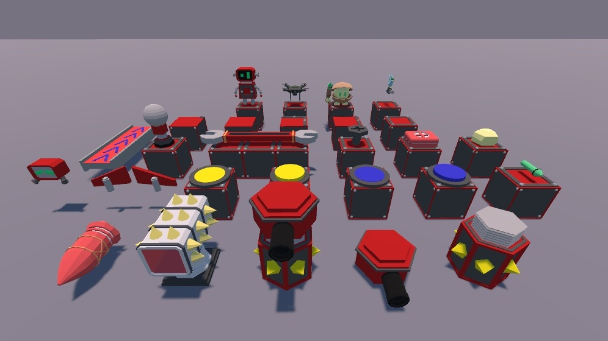

CarryVaultはUnity用の3Dモデルのアセットです．
UnityPackageManagerを使用して，Unityのプロジェクトに簡単にインポートできます．
このパッケージでは，ファンタジーの世界，ロボット，古代の遺跡など，さまざまなテーマのローポリで鮮やかなモデルを提供しており，
ゲーム開発者が簡単に使用できるように設計されています．
詳細な説明は以下のGitHubのリンクのREADMEを参照してください．
配布元はこちら： GitHub

以下はCarryVaultのスクリーンショットです．
これらの画像は、アセットに含まれるモデルの一部を示しています．
簡単なスクリプトも含まれており、Unityのシーンにモデルを配置して簡単にアニメーションを確認できます．

草原のモデル

ロボットのモデル